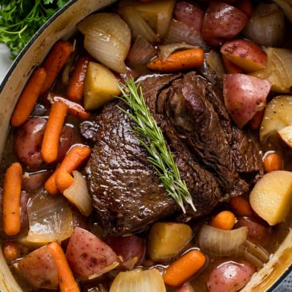

Slow Cooker Pot Roast

Ingredients
- 1 three pound chuck roast
- Olive oil
- 1 pound carrots (peeled and cut into large chunks)
- 2 pounds potatoes (peeled and cut into large chunks)
- 1 onion (peeled and cut into large chunks)
- 2 stalks celery (peeled and cut into large chunks, optional)
- 1 cup beef broth
- 1 tablespoon corn starch
- 2 tablespoons steak seasoning (for seasoning mix)
- 1 tablespoon kosher salt (for seasoning mix)
- 1 tablespoon dried thyme (for seasoning mix)
- 1 tablespoon dried rosemary (for seasoning mix)
Cooking Directions
- Combine together seasoning mix in a small bowl, then set aside.
- Coat both sides of meat with olive oil. Sprinkle on a third of the seasoning mix onto each side.
- Sear both sides of the meat in a large skillet over medium-high heat. Transfer roast to slow cooker.
- Place the vegetables in a large bowl. Drizzle on a little olive oil to coat vegetables. Sprinkle on the remaining seasoning mix.
- Add the vegetables to the same skillet that was used to sear the meat.
- Sauté for about five minutes - stirring occasionally.
- Transfer the vegetables to the top of the roast in the slow cooker.
- Pour in the beef broth. Cover with lid.
- Cook on low for 9 ours or on high for 6 hours
- Using a turkey baster, retrieve most of the cooking juices from the slow cooker.
- Transfer juices to a small sauce pan and bring to a simmer over medium heat on the stovetop.
- Whisk together the cornstarch with a little water. Blend into the pan juices while whisking.
- Bring back to a simmer until thickened. Taste and adjust seasoning as needed.
- Transfer the roast and vegetables to a large platter. Ladle the gravy over. Serve immediately.